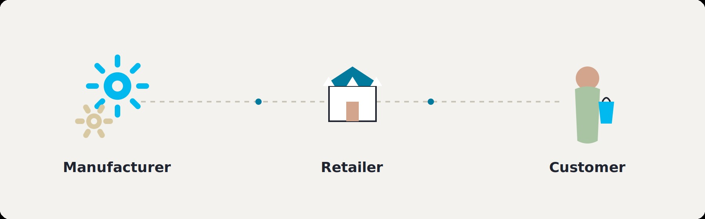

Customer Intelligence & Executive Decision Support Case Study – ZediMart
The throughline: reliable decisions begin with validated evidence. Every figure on this page traces to a query executed against a live PostgreSQL database, not to assumption.
ZediMart is a fast-growing retail and distribution business operating ten stores across five Nigerian cities, Lagos, Port Harcourt, Abuja, Ibadan, and Kano. Leadership needed a consolidated, trustworthy view of customer behavior, order validity, and inventory health to support operational, financial, and marketing decisions, but the underlying data was spread across six disconnected tables with no confirmed relationship between them.
I was asked to answer four specific stakeholder questions: build a unified customer list for Marketing, validate order and payment data for Finance, reconcile inventory against the product catalogue for Operations, and produce a clean, executive-ready revenue report. Rather than answering each question at face value, I tested the evidence behind every answer before reporting it.

Twelve queries, run against a live PostgreSQL 16 database loaded from the actual ZediMart dataset, organized into four parts, one per stakeholder question. The full annotated library, including every query and its confirmed result, is available as a standalone file.
View ZediMart_SQL_Library.sql →
500 customer records checked for duplication and completeness before being treated as reliable. 0 duplicate IDs, 0 duplicate emails, 0 duplicate phone numbers, 0 missing fields.
1,000 orders confirmed against valid customers, zero orphaned. Payment methods: POS 351, Transfer 330, Cash 319, no unpaid status present in the data. Order value brackets: Low 477, Medium 307, High 216. And the headline finding: Sales (Nov 2024 to Apr 2025, ₦7,447,707) and Orders (all of 2026, ₦10,447,947) share zero overlapping days. A naive combined total of ₦17,895,654 would misrepresent two periods that never coexisted.
No field in the Products table confirms discontinued status. The only honest proxy, zero stock across every store, returns zero candidates. What the data can confirm instead: 154 of 1,000 store-product combinations sit below their defined reorder level, six of them at zero stock right now.
523 of 1,000 orders fall above the dataset average, cleanly cast and free of NULLs. And the capstone query makes the Sales/Orders risk visible directly inside the reporting layer, rather than letting it happen silently inside a dashboard visual.
Five opportunities, seven risks, every entry traced to the exact query it came from.
| ID | Opportunity | Evidence | Priority |
|---|---|---|---|
| O1 | Restore confidence in executive revenue reporting by reporting Sales and Orders separately | Zero overlapping days between the two tables | HIGH |
| O2 | Build a tiered engagement strategy around the High-value order segment | 216 orders, 21.6% of volume, generate 37.0% of revenue | HIGH |
| O3 | Prioritize restocking at the five highest-breach stores | Branch 9 (Kano) carries 21 breaches, the highest of any store | MEDIUM |
| O4 | Use the customer base as a reliable marketing foundation without further cleanup | 500 of 500 records complete and unique, confirmed not assumed | MEDIUM |
| O5 | Add a product lifecycle status field to the schema | No field currently distinguishes active from discontinued products | MEDIUM |
| ID | Risk | Impact | Level |
|---|---|---|---|
| R1 | Executive revenue figures misrepresent two disconnected periods as one continuous stream | Any dashboard summing Sales and Orders misleads leadership | CRITICAL |
| R2 | 41.3% of orders are dated after the analysis date | Current order volume cannot be trusted until explained | CRITICAL |
| R3 | Six store-product combinations at zero stock, 154 below reorder level | Lost sales and customer dissatisfaction, already occurring | HIGH |
| R4 | The data model cannot confirm which products are discontinued | Cannot distinguish "no problem" from "no visibility" | MEDIUM |
| R5 | The data model cannot confirm which orders remain unpaid | Finance may lack visibility into incomplete transactions | MEDIUM |
| R6 | Customer PII fields undocumented in the published data description | A governance and access-control gap | LOW-MEDIUM |
| R7 | Source files supplied without header rows | Silent data loss risk during onboarding | LOW |
Every register entry plotted by impact and effort. Nothing padded, if a category has fewer entries, that's the accurate picture.
Separate Sales/Orders reporting · Restock 6 zero-stock items · Launch High-value engagement
Investigate future-dated orders · Restocking cadence review · Add product status field
Update data dictionary · Document header-row convention · Formalize customer list handoff
Confirm whether an unpaid order status exists upstream (R5)
Seven recommendations, each derived from evidence confirmed during this analysis, rather than predetermined actions inherited from the original case study brief.
Four phases, sequenced by actual dependency, not convenience.
Restock 6 zero-stock items. Separate Sales/Orders reporting. Hand the High-value segment to Marketing. Update the data dictionary and header-row documentation.
Escalate the future-dated orders pattern. Confirm the unpaid-status question with the payment system. Begin data gathering for the restocking cadence review.
Add the product status field. Implement restocking changes based on what Phase 2 uncovers. Resolve the Sales/Orders relationship permanently, formalize separation or build corrected join logic, whichever the evidence supports.
Quarterly customer audits. Track the High-value segment's revenue share over time. Monitor reorder breaches monthly across all ten stores. Re-verify no combined revenue figure has quietly reappeared.
Every number on this page was tested against a live, loaded PostgreSQL database, not assumed from the source brief or a single exploratory pass. This section documents how.
| Table | Source rows | Loaded rows | Result |
|---|---|---|---|
| stores | 10 | 10 | Confirmed |
| products | 100 | 100 | Confirmed |
| inventory | 1,000 | 1,000 | Confirmed |
| sales | 3,000 | 3,000 | Confirmed |
| customers | 500 | 500 | Confirmed |
| orders | 1,000 | 1,000 | Confirmed |
Two real issues were caught and corrected during the build, not discovered later by a reader: an inconsistent value-bracket definition between an exploratory pass and the final library, and a stray formatting character in an early draft of the Prioritization Matrix. Neither reached a final document. Both are recorded because a validation log that only reports successes isn't a credible one.
This engagement began with four stakeholder questions. The analysis uncovered something more consequential than direct answers to them.
Several assumptions in the original brief did not survive contact with the data. The customer base did not need the deduplication it was assumed to need. Whether products were discontinued could not be confirmed at all, not because the answer was hidden, but because the data model was never built to answer that question. Whether every order was truly paid could not be confirmed either, for the same reason.
None of these were failures of analysis. They were the analysis working correctly, testing an assumption rather than accepting it, and reporting the honest answer even when the honest answer was that the data cannot say.
What changed as a result: leadership now has a revenue reporting structure that will not silently misstate two disconnected periods as one continuous figure. Five stores know exactly where their restocking gaps are concentrated, led by Kano's Branch 9. A ₦3.86M revenue segment has a name and a strategy instead of disappearing into an average. And two real gaps in the data model itself are now documented decisions rather than invisible blind spots.
This engagement produced six connected deliverables, each building on the one before it: a verified SQL query library, an executive risk and opportunity register, a prioritization matrix, evidence-led business recommendations, a dependency-sequenced implementation roadmap, and a validation and audit log documenting the verification process itself.
SQL · PostgreSQL · Data Validation · Business Intelligence · Risk Assessment · Executive Reporting · Stakeholder Translation · Data Governance · Process Prioritization